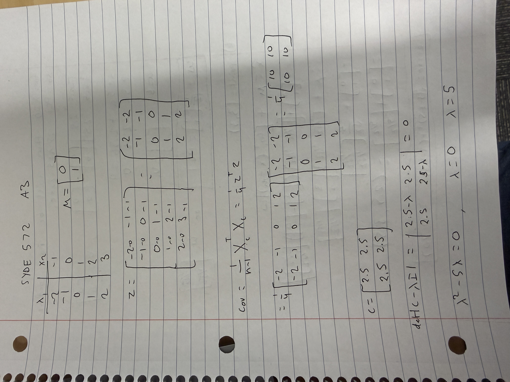
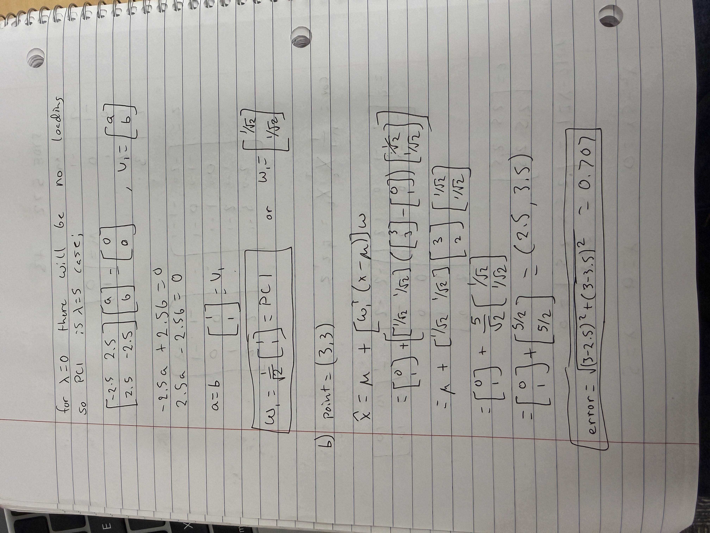
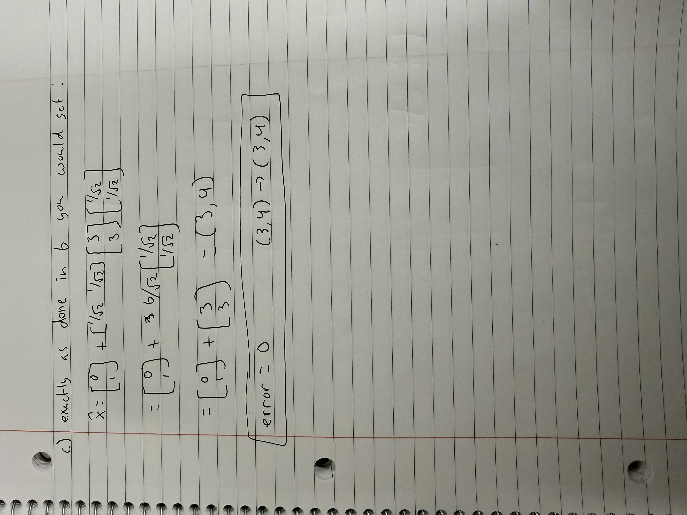
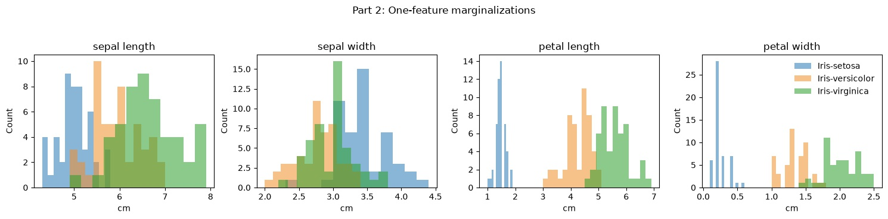
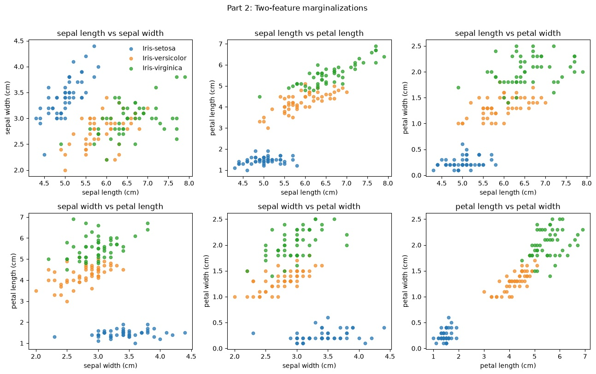
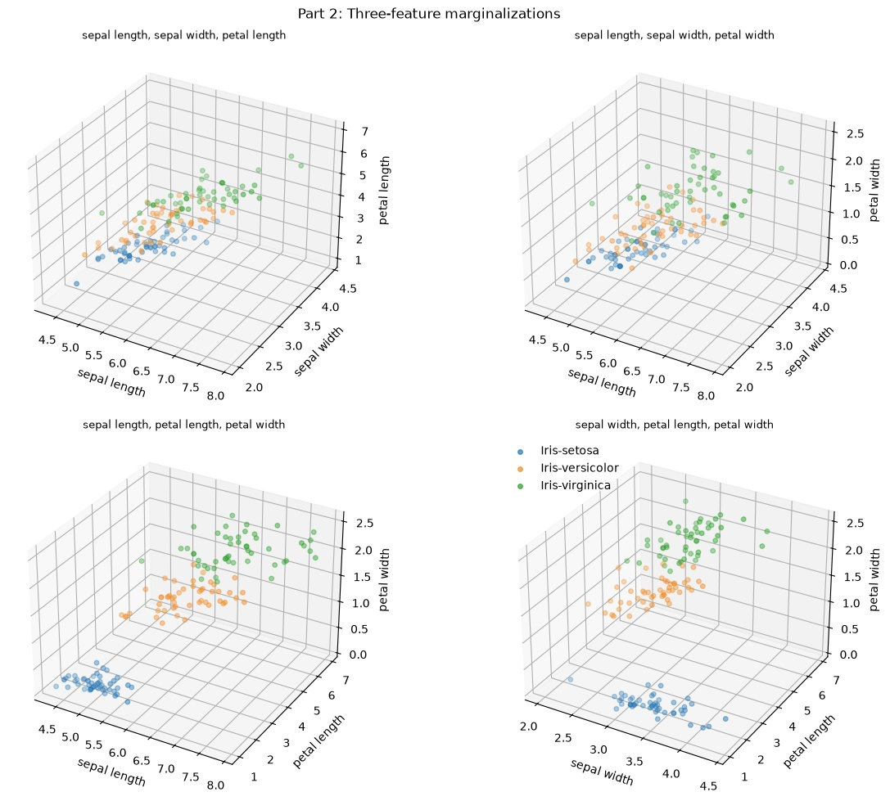
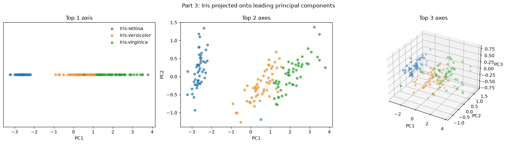
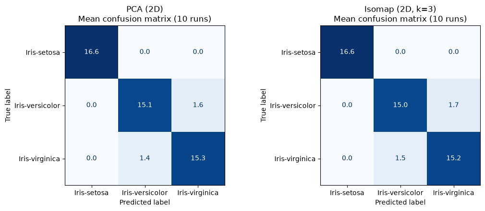

Part 1 — Handwritten work



Part 2 — Data visualization by marginalization



Part 2 observations
In 2D space, all the combinations create clear clustering except for sepal length vs. petal width. In 3D space, we see the clearest clustering when comparing sepal length with petal length and width, and sepal width with petal length and width. Otherwise, the clustering is not as obvious. The separation for setosa is always clearest, while the boundaries for versicolor and virginica are much closer and harder to clearly identify which cluster the point belongs to.
Part 3 — PCA
| sepal length | sepal width | petal length | petal width | |
|---|---|---|---|---|
| PC1 | 0.361590 | -0.082269 | 0.856572 | 0.358844 |
| PC2 | 0.656540 | 0.729712 | -0.175767 | -0.074706 |
| PC3 | -0.580997 | 0.596418 | 0.072524 | 0.549061 |
| PC4 | 0.317255 | -0.324094 | -0.479719 | 0.751121 |

Part 3 observations
Just one PC is quite good at dividing up the data, so we can clearly identify the majority of cases, with some issues arising at the versicolor/virginica boundary. This is further improved by using 2 PCs, where we can clearly see clustering with minimal boundary overlap. 3 PCs arguably look slightly noisy.
Part 4 — Data compression
97.77% of the variance is explained by the first 2 PCs in our Iris dataset. One PC explains 92.46% of the variance, meaning we need just 1 PC to be able to explain at least 50% of the variance within the dataset.
Part 5 — Nonlinear components with Isomap


Train/test classification comparison (10 repeated splits)
| Model | Mean accuracy | Mean macro precision | Mean macro recall | Mean macro F1 |
|---|---|---|---|---|
| PCA (2D) | 0.940 | 0.941 | 0.940 | 0.940 |
| Isomap (2D, k=3) | 0.936 | 0.939 | 0.936 | 0.936 |
| Model | Iris-setosa precision | Iris-versicolor precision | Iris-virginica precision |
|---|---|---|---|
| PCA (2D) | 1.000 | 0.919 | 0.905 |
| Isomap (2D, k=3) | 1.000 | 0.917 | 0.901 |

Part 5 comments
PCA and ISOMAP take high-dimensional data and compress it into a lower-dimensional space. PCA does this by trying to explain the variance seen across variables and then re-centering and shifting the data such that the maximum explained variance factor is on each axis. In our 2D case, 97.77% of the variance is explained. ISOMAP tries to maintain the neighbourhood spacing using KNN and compress the data onto 2 axes in this case. While we don't see the exact amount of variance explained, we can see from the 2D plot that it is remarkably accurate, minus the one outlier green dot.
When trying to evaluate each model's ability to accurately classify the data, I noticed one could beat the other if I just changed the seed, so I used 10 different seeds and averaged them to get a final confusion matrix. The matrix gives a slight edge to the PCA model, which makes sense if we evaluate the graph visually for the 2D case. We can see that a green dot (virginica) gets transposed above all the yellow dots (versicolor). This shows a much more blended boundary for versicolor and virginica, which can make predictions much harder to make. While the performance is very close for both models, it is clear from both the visual results and the performance that PCA does a better job of explaining variance and does not blend the signals together as much because of each PC's orthogonality.
In summary, from the perspective of data compression, it seems PCA preserves the boundaries better as it converts the data to a lower-dimensional space. From a performance perspective, this is confirmed by its slight outperformance over 10 sampled seeds, although, to be highly confident, we may want to expand the experiment and use a larger dataset.